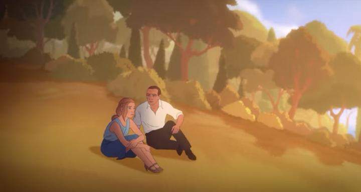

"Charlotte" is a biographical story about Charlotte Salomon, a jewish painter that ultimately died in the Holocaust during World War II. Her life is more complex than that, however. As a young woman finding her way, she has to juggle her motivations and the approval of her family to be a painter and not a seamstress. She lives through multiple loves and losses. In particular, she has a stern and cruel grandfather, and a history of depression and suicide plagues the women in her family (a revelation in 2015 of her life likely inspired the production of this film). With these elements surrounding her, Charlotte vows to paint a series of pictures that represent the entirety of her life and family, both good and bad. This would be displayed as "Life? or Theater?," made up of over 1,000 paintings (although Wikipedia cites 769). I've grown tired of the Holocaust repeatedly being the subject of films (especially when so many other, more recent, historical crimes are committed), but "Charlotte" manages to feel unique, thanks to that added complexity and depth of Charlotte as a character. In the first act of the film, it shows the Nazi revolution as being insidious and systematic. A handful of teenagers and adults produly wear the Nazi emblem on their sleaves while at school. Students and staff shout "heil!" when greeting their superiors, and they respond back with the same. Schools and government officials hesitate when they see an applicant as Jewish. It's open racism, but goes largely unchecked as long as there's no violence. Even Charlotte herself underestimates the seriousness of the social climate, often walking outside alone despite her mother's fears, up until the point where she's forced to flee her native Germany. Somehow, this portrayal is more believable than I've seen before, and feels more applicable to more recent events. But again, Charlotte as a character is much more than that. Some of her choices seem naive and vulnerable, but all believable for her age and circumstances. The darker aspects of her family relationships make her story more compelling. The movie made me want to learn more about her and her story, despite having never heard of her before learning the movie existed. That in itself makes the movie a success.This all helps to make up for the unfortunate visual quality. The film is clearly animated with rigged 2D vector-art characters and a limited number of pre-defined rotational poses. The short bonus featurettes on the Bluray (each less than two minutes long) shows the example rigs, and how they are copy-pasted into each new background. It's a time-saving measure frequently used on childrens' television, and a popular use of software like Toon Boom. But like the tv shows that use it, the movie looks cheap in motion. Characters are stiff and often lifeless. Their character designs, perhaps partially inspired by Salomon's paintings, aren't nearly as expressive or interesting. There are brief moments when a scene requires poses that the rigs don't support, so it then switches to more dynamic frame animation... THOSE look great, and hint and what this movie could have been. Animation aside, the painterly backgrounds (rendered with digital brush patterns) and strong direction sometimes brings some beautiful shots, and helps save the visual experience slightly.  The film managed to get a great voice cast of famous British actors, including Keira Knightley as the lead, as well as Jim Boradbent and Mark Strong. Marion Cotillard, a co-producer, voices Charlotte for the French dub (frustratingly, the North American Bluray only has the English track). Everyone is good and stronger than your typical cartoon acting, although their performances are grounded and soft, almost like everyone was whispering. I have no idea if the pandemic of 2020 affected the recoridng process, or perhaps permitted these otherwise busy actors to be readily available. Even though the visuals are a weakness, "Charlotte" does justice in making Charlotte Salomon's story compelling. For anyone looking for films of this subject matter and era, or even if you weren't looking for it, this film is worth the time to appreciate.
- "Ani" More reviews can be found at : https://2danicritic.github.io/ Previous review: review_ChaO Next review: review_Chicken_for_Linda!